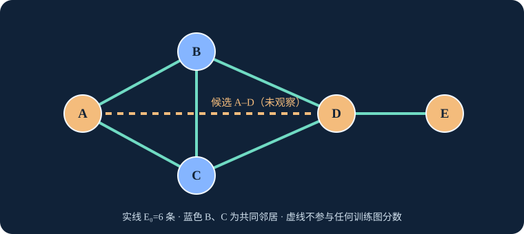

LINK PREDICTION / FEATURES · TIME · EVALUATION
预测未来的连接之前，必须保证当前的图没有包含未来答案。
明天会出现哪条新边，能否只看今天的朋友关系？
在协作网络里，两位研究者尚未发表过共同论文，却可能因为共享合作者而在未来合作；在社交平台里，两名用户有共同好友，也不保证他们一定会建立联系。链路预测就是在给定观察时点的图和明确候选集合之后，为之后可能出现的边打分或预测标签。
最危险的误区是先用完整历史和未来构图，再从这张图提取“训练特征”去预测同一段未来。算法即使获得非常漂亮的测试成绩，也可能只是看到了答案。

区分当前图、候选边、时间标签
设 G₀=(V,E₀) 是在截止时点 t₀ 之前已知的网络，预测集合应排除自环和 E₀ 已存在的边（针对简单无向图）。未来窗口 (t₀,t₁] 里出现的候选边才可以标记为正例。没有被记录到的关系不一定是真负例：可能存在观测缺失、延迟上报或窗口外形成的边。
| 对象 | 本图示例 | 实验要求 |
|---|---|---|
| 训练边 E₀ | AB、AC、BC、BD、CD、DE | 仅从截止时点之前提取 |
| 候选正例 AD | 不在 E₀ 中 | 假设未来窗口新增 AD |
| 候选负例 AE | 不在 E₀ 中 | 只能称作本教学窗口内未观察到 |
| 打分结构 | A 的邻居 B、C；D 的邻居 B、C、E | 必须固定 G₀ 计算，不可加入 AD |
第一步：共同邻居为什么能作为信号？
记 Γ(u) 为节点 u 在训练图 G₀ 中的邻居集合。共同邻居（CN）把二者的交集大小作为打分；Jaccard 对邻居集合并集规模做归一化。对于本图，Γ(A)={B,C}、Γ(D)={B,C,E}，因此 CN(A,D)=2，Jaccard(A,D)=2/3。
共同邻居更偏向在高度连接区域中形成的三角闭合；Jaccard 会惩罚过大邻域。两者都是启发式相似分数，不是“未来边存在概率”，也不自动校准为 0–1 概率。
第二步：把“普通共同好友”与“超级枢纽”区分开
Adamic–Adar（AA）对每个共同邻居 z 赋予 1/log d(z) 的权重：度数越大的共同邻居贡献越小。在本图中 B 和 C 的度数均为 3，故 AA(A,D)=2/log(3)≈1.82048。它并非除以共同邻居数，也不适用于包含度数为 1 的所谓共同邻居：在无自环简单图里共同邻居至少连着 u、v，因此度数至少为 2。
为未连接的候选节点对评分
A–D 的共同邻居是 B、C。评分来自训练图，不表示已发生新边。
如何避免训练/测试泄漏？
- 时间先行。以时间 t₀ 固定所有训练边及所有特征，未来 (t₀,t₁] 的边不得用于邻居、度数、社团、随机游走或嵌入计算。
- 候选空间明确。只在训练图未连接的节点对中评分。若候选空间很大，说明如何采负样本；固定随机种子和采样比。
- 评估口径一致。报告 PR-AUC、Precision@K、Recall@K 时说明正例先验、负例定义、候选池与 K。精确率在平衡采样数据集上不直接等于实际部署精确率。
- 不可观察不等于假。训练期间已经认识但尚未观测到的关系，会污染“新边”标签；需要数据来源与观测完整性说明。
对于图神经网络式预测，还需区分训练消息传递图与验证/测试的目标边。不小心在编码器邻接矩阵中加入测试正边，是严重的结构泄漏。
代码：独立手算 + NetworkX 交叉验证
运行环境 Python 3.11+、NetworkX 3.3+；不需要真实账号数据或外部 API。所有结构分数只使用明确列出的 E₀，未来标签仅用于解释任务。
import math
import networkx as nx
train = nx.Graph([("A","B"), ("A","C"), ("B","C"),
("B","D"), ("C","D"), ("D","E")])
assert not train.has_edge("A","D")
assert not train.has_edge("A","E")
def scores(u, v):
a, b = set(train.neighbors(u)), set(train.neighbors(v))
common = a & b
cn = len(common)
jaccard = cn / len(a | b) if a | b else 0.0
adamic_adar = sum(1 / math.log(train.degree(z)) for z in common)
return cn, jaccard, adamic_adar
cn, j, aa = scores("A", "D")
assert cn == 2
assert math.isclose(j, 2/3)
assert math.isclose(aa, 2 / math.log(3))
assert scores("A","E") == (0,0.0,0)
nx_aa = list(nx.adamic_adar_index(train, [("A","D")]))[0][2]
assert math.isclose(nx_aa, aa)
print("A-D score:", cn, j, round(aa, 6))这段程序验证的是数学定义与手工图，没有在一条真正的长周期数据集上测量模型的预测性能。理解评分与验证机制，是开展时间外评估的前提。
研究级交叉验证：候选池和未来非边：CN 也会被未来数据改变
在合成历史图 t≤3 中，CN(B,E)=0。若提前加入未来 B–D@5，D 变成 B、E 的共同邻居，CN(B,E) 错误升到 1；同时 B–D 已是训练已有边，不再符合“预测新边”的候选资格。因此结构评分、负例候选与训练邻接都必须按时间冻结。
同一套 Python 数值 oracle 与浏览器交互对照合规图、故意泄漏图、严格时间路径和图传播系数。查看跨章实验与可复算反例 →
原始论文、接口和适用范围
- Liben-Nowell & Kleinberg (2007), The Link-Prediction Problem for Social Networks。
- Adamic & Adar (2003), Friends and Neighbors on the Web。
- NetworkX Adamic–Adar 和 Link Prediction API。
下一篇处理一个容易让人误判的表达层：两张布局不同的网络图，是否真的代表不同的结构？